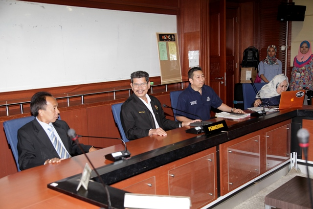

The INSARAG Asia Pacific Region Urban Search and Rescue Earthquake Response Exercise was held in Kota Kinabalu, Malaysia, from 07 to 09 November 2013.
The purpose of the exercise is to practice international coordination methodology in accordance with the INSARAG Guidelines, with a focus on cooperation between national and international disaster managers and response actors as well as joint operations planning between Local Emergency Management Authorities (LEMA) and the international On-Site Operations Coordination Centre (OSOCC). This exercise, based on the scenario of a possible major earthquake occurring in India, will see active involvement of international urban search and rescue (USAR) teams from the region responding and working alongside fellow national USAR members, and in parallel, there will be engagement of the national disaster management team working alongside the United Nations in-country response mechanisms during such major disasters.
